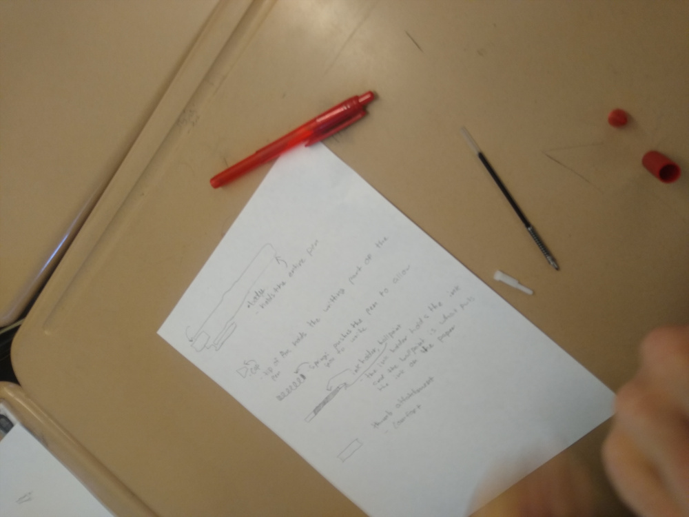

Maker Certification and the Maker Philosophy
I am currently enrolled in a Makerspace Certificate Program through Sonoma State. The goal of the program is to prepare teachers to bring the philosophy and tools of Makerspaces into traditional school and classroom settings. When adopted by a school, this means creating a Makerspace on campuse and running Making classes, but as a single teacher my aim in aquiring the certification is to bring more maker-minded activities and philosophy to my classroom.
I have enjoyed tinkering my whole life; when I was a child I played with Legos, and throughout my life I have had the opportunity to fiddle with 3D printers, build robotics/arduino projects, and dabble in numerous crafts both at my home and in the classroom. My grandfather shared many of the same interests, and was one of the first people to introduce me to Maker spaces. He was an electrical engineer, himself tinkering with innumerable projects over the years, and spoke to me often about how he believed engineering kits and workshops could enhance science education.
In that same vein, I believe the philosophy of making, generally, has great potential in education pedagogy, and can bring new and valuable experiences to all students in the classroom. I believe that making (giving hands-on building and problem-solving experiences in the classroom) builds confidence and creativity in students. It provides more kinesthetic experiences and the chance to struggle productively in a low-stakes environment. By asking students to plan, create, tinker, break, and fix objects and structures, we are cultivating an sense of agency and grounding science learning in their every day experiences.
Building a Makerspace
I am in the early years of my career, but already I have started to expand the range of my teaching. I have seen several educational makerspaces (see the picture to the right) in the course of aquiring my certification, and what stood out in all of them is the organization and personality of each space. Rooms are decorated with previous projects, materials are easily accessible and the space is built around their use.
I am incorporating occasional activities (see Making in Class) and student art where I can, but in the long term I want to build a classroom where students have ample tools and resources, and are learning through activities that have them building, testing, and analyzing as they engage with scientific ideas and practices.
Maker in the Classroom
Capturing Chemical Energy
As part of our unit on Energy/Calorimetry (HS-PS3-1 and 3-4), students burned a cheeto under a can of water to measure how many calories of heat it could produce (and thus infer its chemical energy). Students were tasked with creating structures to capture as much energy as possible, and raise the heat of the water more with each test (they did around 3 to 4 trials). A fun enhancement to an otherwise passive lab! But I would not advice using rubber bands, and being sure to emphasize to students that they must insulate any cardboard they use.
The Structure of a Pen
As an introduction to atomic structure, I had students take apart, label, and describe the pieces of ballpoint pens. It is a way to start thinking about structure, and the function of induvidual parts as part of a whole. This activity was shown to me as part of my Maker certification class, original posed as an exersize to get students thinking about how we live in a built world, it was easy to impliment and helped get students thinking about atoms as the "smallest pieces" they would get if they could take apart their pens totally.
Support Making in My Classroom!
If you would like to help me build up the resources to support and expand my curricula, please visit the donation list I have set up. Here is a list of items you can donate. I will try to keep it updated as I fill up or run low on specific supplies.
Amazon Wishlist
I also have made an amazon wishlist with items that will help me provide more for students, or which I want to help organize my classroom. Do not feel you have to buy directly from amazon; I will gladly accept direct donations of these items as well. You can conatct me or drop them off at the school's front office.
My classroom wishlist can be found here.
And thank you for reading this far!